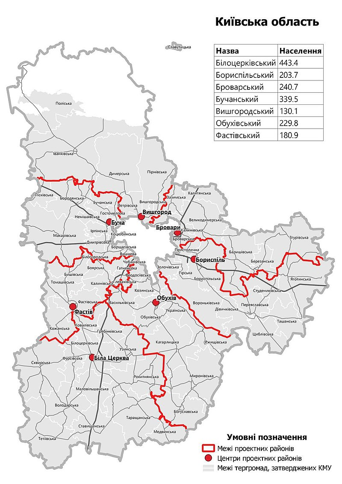

Загальні відомості:

Ки́ївська область — область на півночі України. Обласний центр — місто Київ
Площа області — 28 131 км² (4,66 % території України, 8-ма за цим показником у країні), населення станом на кінець
2022 року становить 1,8 млн осіб. Розташована в басейні середньої течії Дніпра, більшою частиною на Правобережжі. На
сході межує з Чернігівською і Полтавською, на південному сході та півдні з Черкаською, на південному заході — з
Вінницькою, на заході — з Житомирською областями України, на півночі — з Гомельською областю Республіки Білорусь.
Київська область була утворена 27 лютого 1932 року. В області налічується 7 районів, 69 об'єднаних територіальних
громад, 489 старостинських округів, 26 міст, 30 селищ міського типу, загалом 1182 населених пунктів. Північну
частину області площею близько 2 тис. км² займає Чорнобильська зона відчуження. Місто Славутич — ексклав Київської
області на території Чернігівської.